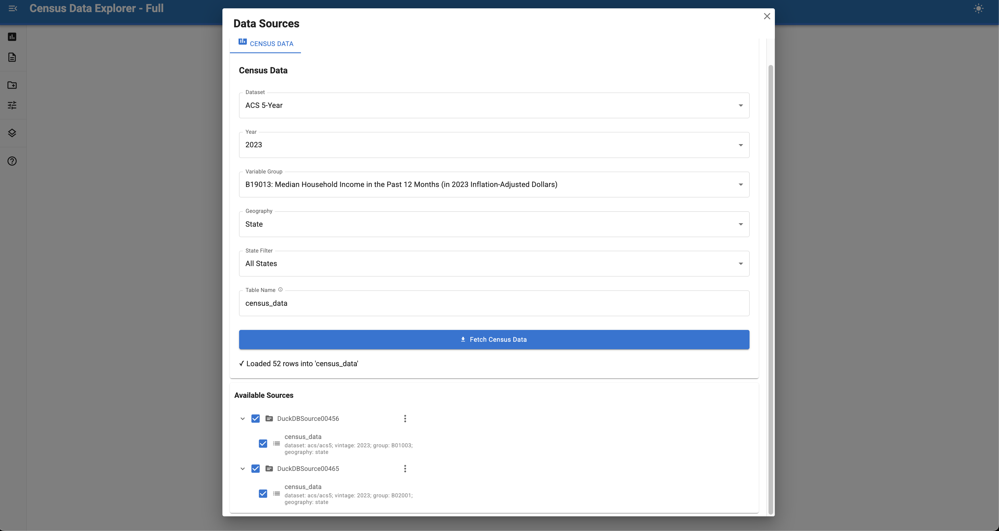
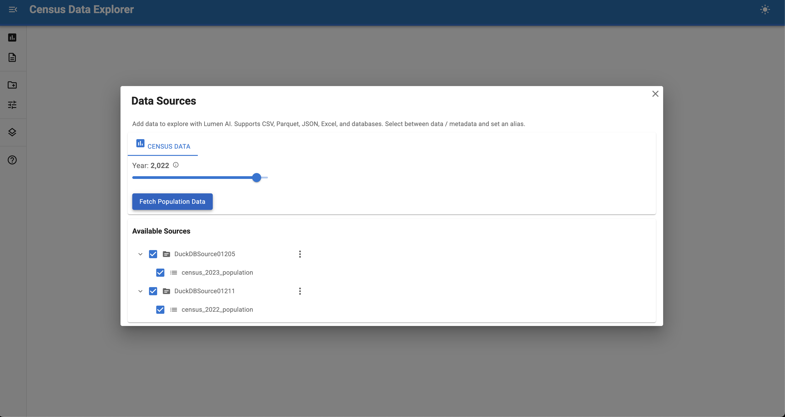

Building a Census Data AI Explorer¶

Build a data exploration application that integrates U.S. Census Bureau data using Lumen AI.
This tutorial creates a custom data source control that lets you fetch demographic data through a simple interface.
Final result¶
A chat interface that can fetch and analyze U.S. Census data with custom controls for selecting datasets and years.
Time: 15-20 minutes
What you'll build¶
A custom data source control that integrates with the Census API and lets users explore demographic data through natural language queries. The tutorial follows three steps:
- Start with a minimal example - Build a basic year selector with ~50 lines of runnable code
- Understand the components - Learn how
_loadand_render_controlswork - Extend to full version - Add dynamic options and more features
For a detailed reference on creating custom controls, see the Source Controls documentation.
Why this tutorial?¶
Lumen AI has built-in support for many data formats, but some data lives behind APIs that require specific parameters or dynamic filtering. By building a custom Source Control, you can:
- Connect to external APIs (like the U.S. Census Bureau)
- Add interactive parameters for users to select subsets of data
- Expose data to LLM agents so they can answer questions about it immediately
Prerequisites¶
Install the required packages:
1. Minimal runnable example¶

Copy this complete example to census_explorer.py and run it with panel serve census_explorer.py --show:
This ~50 line example is immediately runnable! Try clicking on "Sources" in the sidebar, selecting the desired year, and clicking "Fetch Population Data".
Once the data loads, you can ask questions like:
- "What is the total population?"
- "Show me the top 10 states by population"
- "Which state has the largest population?"
2. Understanding the components¶
Let's look at the two core methods you implemented in CensusControls:
The _render_controls() method¶
This method returns the list of widgets shown in the sidebar. We use from_param to link the widget directly to the vintage parameter:
The _load() method¶
This is the async hook where the actual data fetching happens. It uses self.vintage (updated by the slider) to download the correct data:
async def _load(self) -> SourceResult:
self.progress("Fetching census data...")
df = await asyncio.to_thread(ced.download, ...)
return SourceResult.from_dataframe(df, "census_data")
The SourceResult you return is then registered as a table that the AI agent can query.
3. Extend to full version¶
The minimal example uses fixed values: ACS 5-Year dataset, population data (group B01003), state geography. The full example below adds:
Dynamic variable groups - Load and display all available Census variable groups:
def _get_group_options(self):
"""Fetch variable groups and return {label: value} dict."""
groups_df = ced.variables.all_groups(self.dataset, self.vintage)
return {f"{code}: {desc}": code for code, desc in groups_df.values}
Multiple datasets - Choose between ACS 1-Year and 5-Year:
from censusdis.datasets import ACS1, ACS5
dataset = param.Selector(default=ACS5, objects=[ACS5, ACS1])
Geography levels - Select state, county, tract, block group, etc.:
import censusdis.geography as cgeo
def _get_geo_options(self):
"""Fetch geographies and return {label: value} dict."""
geo_specs = cgeo.geo_path_snake_specs(self.dataset, self.vintage)
# Return unique leaf geographies with friendly names
State filtering - Limit data to specific states:
from censusdis.states import NAMES_FROM_IDS
STATES = {"All States": "*", **{name: fips for fips, name in NAMES_FROM_IDS.items()}}
state_filter = param.String(default="All States")
Reactive updates - Options update when dataset/year changes:
@param.depends("dataset", "vintage", watch=True)
def _on_dataset_vintage_change(self):
"""Update group and geo options when dataset or vintage changes."""
self._group_select.options = self._get_group_options()
self._geo_select.options = self._get_geo_options()
Full example¶
Here's a complete implementation with all the features described above:
| census_explorer_full.py | |
|---|---|
1 2 3 4 5 6 7 8 9 10 11 12 13 14 15 16 17 18 19 20 21 22 23 24 25 26 27 28 29 30 31 32 33 34 35 36 37 38 39 40 41 42 43 44 45 46 47 48 49 50 51 52 53 54 55 56 57 58 59 60 61 62 63 64 65 66 67 68 69 70 71 72 73 74 75 76 77 78 79 80 81 82 83 84 85 86 87 88 89 90 91 92 93 94 95 96 97 98 99 100 101 102 103 104 105 106 107 108 109 110 111 112 113 114 115 116 117 118 119 120 121 122 123 124 125 126 127 128 129 130 131 132 133 134 135 136 137 138 139 140 141 142 143 144 145 146 147 148 149 150 151 152 153 154 155 156 157 158 159 160 161 162 163 164 165 166 167 168 169 170 171 172 173 174 175 176 177 178 179 180 181 182 183 184 185 186 187 188 189 190 191 192 193 194 195 196 197 198 199 200 201 202 203 204 205 206 207 208 209 210 211 212 213 214 215 216 217 218 219 220 221 222 223 224 225 226 227 228 229 230 231 232 233 234 235 236 237 238 239 240 241 242 243 244 245 246 247 248 249 250 251 252 253 254 255 256 257 258 259 260 261 262 263 264 265 266 267 268 269 270 271 272 273 274 275 276 277 278 279 280 281 282 283 | |
This complete version includes all the features discussed: dynamic variable groups, multiple datasets, geography selection, state filtering, and reactive UI updates.
Next steps¶
Extend this example by:
- Add custom analyses: Create specialized visualizations for demographic data (see Analyses configuration)
- Customize agents: Add domain expertise about Census variables and geography (see Agents configuration)
- Multiple sources: Combine Census data with other datasets for richer analysis (see Sources configuration)
See also¶
- Source Controls — Complete guide to creating custom source controls
- Data Sources — File and database connections
- Custom Analyses — Building specialized visualizations